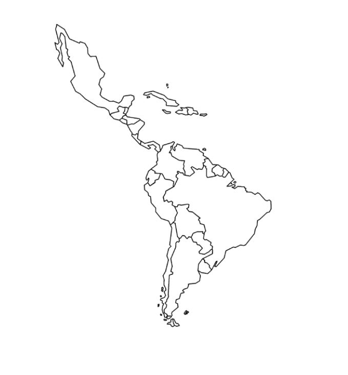
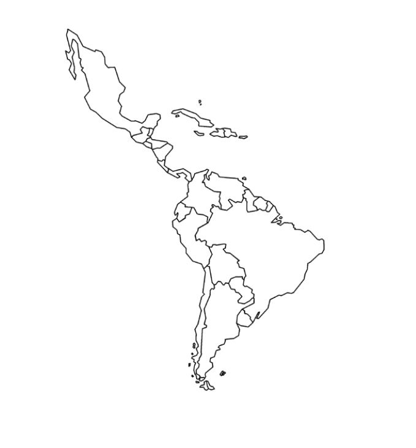
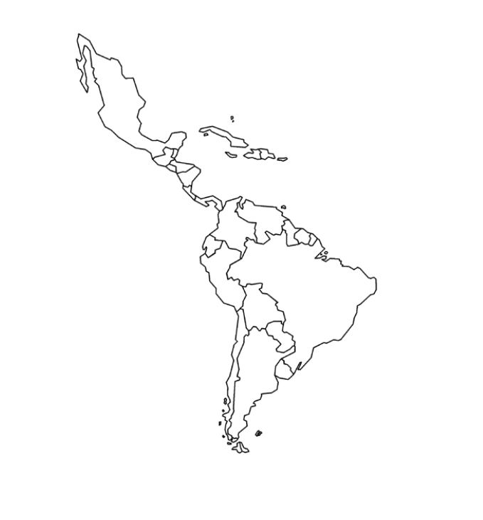
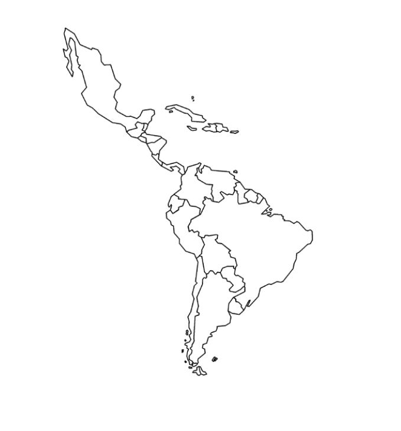

En 2020 fue noticia un suceso histórico digno de ser visto por el mundo: las comunidades indígenas pertenecientes a la étnia Misak, del suroccidente de Colombia, más puntualmente en Popayán, capital del departamento del Cauca, derribaron una estatua del “fundador” de dicha ciudad criolla empotrada en la punta del Morro de Tulcán el cual fue levantado por las comunidades siglos antes de su “fundación” con adobes de tierra pisada para erguir una pirámide en nombre del Cacique Payán.
Observamos aquí un símbolo colonial representado en una ciudad instalada sobre territorio ancestral indígena (como una historia que se replica en todo el continente), en donde extranjeros erigieron la escultura de un ícono del conquistador español sobre un símbolo atávico: el Morro de Tulcán.
Las noticias encabezaron titulares: “Los argumentos de los Misak para tumbar la estatua de Belalcázar” (El Tiempo, 18/09/2020), “Indígenas tumban la estatua de un conquistador español en Colombia” (La Vanguardia, 17/09/2020), “Una vez más surge la pregunta: derribo de estatuas, ¿revanchismo o legítima rebeldía?” (Revista Arcadia, 18/09/2020) los que evidencian cómo a través de los medios de comunicación hegemónicos, se legitima y normaliza la episteme colonial (moderna), a través de la cual transita el “fundamento último”: entendido como una verdad universal que se impone, cual monumento, sobre el conocimiento no reconocido por el discurso dominante.
“Revanchismo o legítima rebeldía” esconde entre sus letras una aparente dicotomía que revela la lógica kantiana de la epistemología blanca, en donde realmente no nos da nada qué escoger, ya que desconoce las relaciones ecológicas (oikos = casa y logos = ciencia) de la ancestralidad indígena que identifica la “casa grande” como el “espacio en donde se desarrolla nuestra vida, buscando la armonía y el equilibro de la naturaleza, con los espíritus de nuestros antepasados, con los espíritus del agua, del viento, del aguacero, de las plantas, de las lagunas, de los ríos, de los páramos, las crecientes que traen consigo a los caciques que nacen cada 100 años” (Taitas: Tunubalá y Muelas. 2008. pg. 24)
Aquí se evidencia la manera como, a través de los discursos dominantes representados en el Estado de la mano de sus medios de comunicación, se deslegitima el intento de los pueblos originarios por reivindicar su sabiduría y conocimiento.
Los medios de comunicación citados, a través de una actuación articulada que los reconoce como la “cuarta rama del poder público”, ejercen su conocida fuerza opresora sobre las epistemes anteriores: epistemicidio; precisamente usando como vehículo el lenguaje, el cual es el medio por el cual transita la cultura.
Por su parte, y a manera de represaría, el Estado, en cabeza de la Alcaldía de Popayán y mancomunadamente con la Policía Nacional y el Ministerio del Interior, emiten una orden de captura contra los “implicados” en la acción simbólica, que incluye una recompensa de 5 millones de pesos (28,450 MXN) (El Tiempo. 17/09/2020); poniendo a la ciudadanía en contra de los indígenas manifestantes.
En respuesta, las nuevas sociedades digitales solidarizadas con la causa, han lanzado una tendencia en redes sociales con el numeral #AlcaldeFuiYo, a través de la cual difuminan los amedrentamientos y demuestran que ese acto político (y simbólico) no tiene rostro, sino que obedece a sujetos que han pasado por un proceso de siglos de agenciamiento y merecen la oportunidad de narrar la historia de aquel cacique que nace cada 100 años.
Esta coyuntura nos demuestra como lo cultural es político.
El Tiempo, 18 de septiembre de 2020 tomado de https://www.eltiempo.com/colombia/cali/tras-derribo-de-estatua-indigenas-del-cauca-exigen-que-se-erija-imagen-de-cacique-538466
La Vanguardia, 17 de septiembre de 2020 tomado de https://www.lavanguardia.com/internacional/20200917/483521493723/indigenas-tumban-estatua-conquistador-espanol-colombia-video-seo-ext.html
Revista Arcadia, 18 de septiembre de 2020, tomado de rebeldia/202033/">https://www.revistaarcadia.com/comunidades/articulo/una-vez-mas-surge-la-pregunta-derribo-de-estatuas-revanchismo-o-legitima-rebeldia/202033/
Volver a la página principal